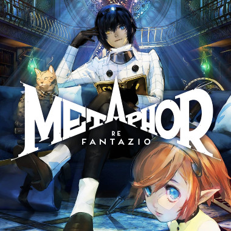
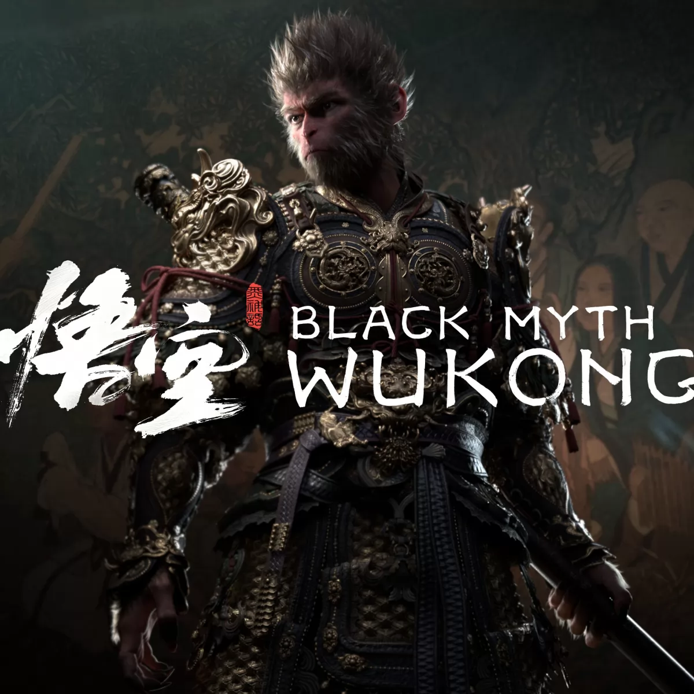
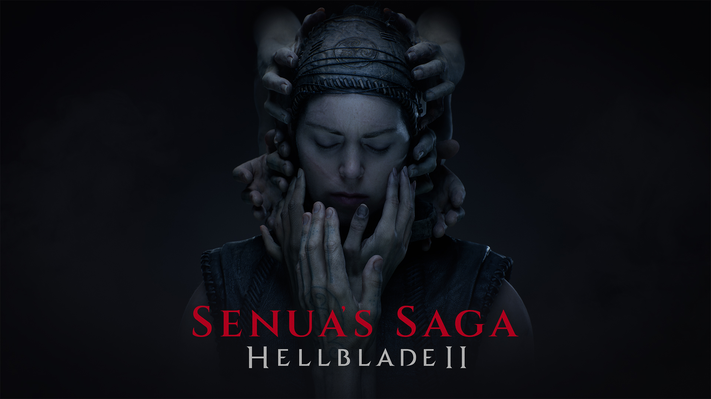
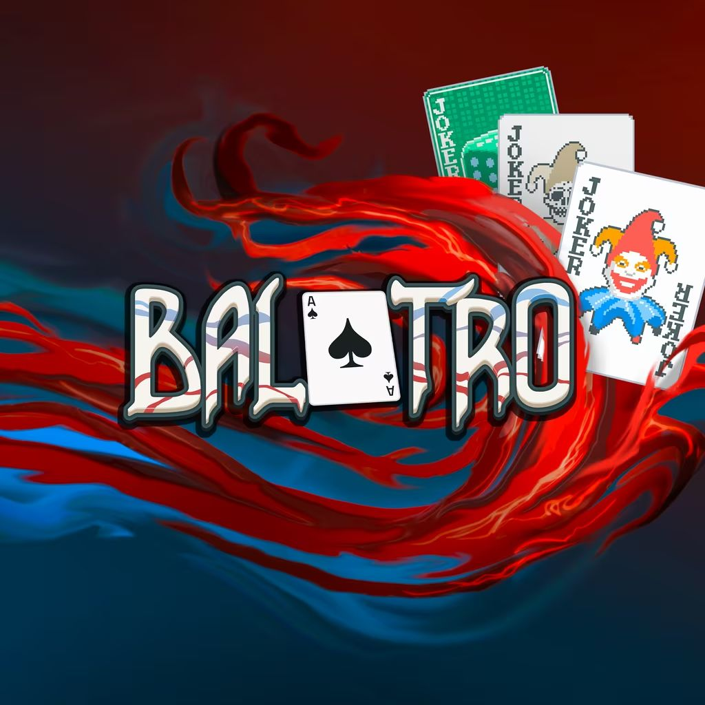

Vincitore: Astro Bot

Data di rilascio: 6 settembre 2024
Genere: Platform, Puzzle, Avventura
Tema: Azione, Fantasy
Sviluppo: Team Asobi
Pubblicazione: Sony Computer Entertainment
Descrizione: Un platform apparentemente semplice che nasconde una raffinatezza incredibile.
Ogni livello è costruito attorno a un’idea chiara e ben realizzata.
Sfrutta l’hardware in modo creativo, senza risultare mai forzato.
La direzione artistica è colorata, pulita e immediatamente riconoscibile.
È un gioco che diverte chiunque, ma con una cura da titolo premium.
Una celebrazione pura del videogioco come esperienza ludica.
Altri candidati:

Final Fantasy VII Rebirth
L’epica saga RPG ritorna con grafica spettacolare e combattimenti modernizzati. Vivi le avventure di Cloud e compagni tra emozioni intense e scenari mozzafiato.

Metaphor: ReFantazio
Un’avventura fantasy piena di mistero e creatività. Esplora mondi surreali, risolvi enigmi e immergiti in una storia unica e affascinante.

Black Myth: Wukong
Azione frenetica e mitologia cinese si incontrano. Combatti nemici epici, padroneggia abilità leggendarie e vivi l’avventura del leggendario Wukong.

Senua’s Saga: Hellblade II
Un viaggio psicologico intenso nel folklore norreno. Combatti, esplora e vivi la tormentata storia di Senua con un realismo sorprendente.

Balatro
Un roguelike deck‑builder con meccaniche ispirate al poker: costruisci il tuo mazzo, gioca mani strategiche e affronta sfide sempre diverse in partite brevi e avvincenti.